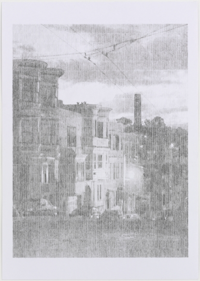
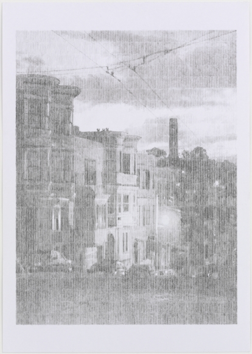

Ewan Gibbs, San Francisco, 2009; graphite on paper; commissioned by SFMOMA; photo: courtesy the artist and Timothy Taylor Gallery, London
Ewan Gibbs, San Francisco, 2009; graphite on paper; commissioned by SFMOMA; photo: courtesy the artist and Timothy Taylor Gallery, London
Ewan Gibbs, San Francisco, 2009; graphite on paper; commissioned by SFMOMA; photo: courtesy the artist and Timothy Taylor Gallery, London

Ewan Gibbs, San Francisco, 2009; graphite on paper; commissioned by SFMOMA; photo: courtesy the artist and Timothy Taylor Gallery, London
Ewan Gibbs, San Francisco, 2009; graphite on paper; commissioned by SFMOMA; photo: courtesy the artist and Timothy Taylor Gallery, London
Ewan Gibbs (British, b.1973) is known for the intimately-scaled, meticulously-rendered drawings he creates employing a unique visual language he developed nearly twenty years ago. While still an art student in London, looking closely at Pop Art and intrigued by the found image, the artist happened across a book of knitting patterns. Printed in black and white, this book broke down the composition of a given pattern stitch-by-stitch, with different marks (circles, triangles, hatch marks, etc.) indicating different colors of yarn. He quickly adapted this knitting shorthand and began making drawings using travel brochures as source material, selecting images in the brochures for their composition and translating these found photographs, mostly of hotel rooms, into drawings. The resulting images were recognizable at a distance, while they became abstract and fleeting up close.
The artist expanded his source material in the following years, beginning to make drawings after his own photographs. He continues to choose Pop subjects for his drawings—often architectural landmarks in major cities, the types of images that might be found in any tourist guidebook—in an effort to make the work less about the particular subject he has selected than about how the image is produced through his unique mark-making system. Among the numerous subjects he has chosen are hotel interiors and facades, sports figures, and the cities of London, Paris, New York, San Francisco, and Chicago.
Gibbs received his BFA from Goldsmiths College, University of London, in 1996. His drawings are included in the collections of the Museum of Modern Art, New York; the Tate Gallery, London; the San Francisco Museum of Modern Art; Museum of Fine Arts, Houston; the Fogg Art Museum, Harvard; the Hammer Museum, UCLA; and the Denver Art Museum, among others. He was invited to create the visual identity of The Armory Show 2009, and the San Francisco Museum of Modern Art commissioned him to make a suite of eighteen drawings on the occasion of the museum's 75th anniversary. Gibbs lives and works in Oxfordshire, England.
Artist Ewan Gibbs discusses the techniques he used to create San Francisco, a suite of drawings commissioned by SFMOMA in 2009. During a visit to California in 2008 he took hundreds of digital snapshots of the city's landmarks, streetscapes, and everyday scenes. He then returned to his studio outside of London to begin the process of translating each photograph into a grid of precise pencil marks representing tiny symbols commonly used in knitting patterns.